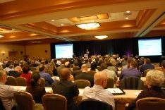
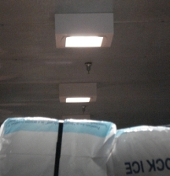

More than 350 researchers, manufacturers, and other industry insiders and observers gathered in San Diego February 1–3, 2011, to participate in DOE's "Transformations in Lighting" Solid-State Lighting (SSL) R&D Workshop.
DOE SSL Portfolio Manager James Brodrick kicked off Day 1 by noting the growing number of applications for which LED lighting products are already cost-competitive, but he stressed the considerable potential for further improvements in efficiency and quality. He characterized OLED technology as poised to make the critical transition from prototypes to marketable products. Brodrick emphasized the tremendous opportunities offered by SSL and urged attendees to take advantage of the technology's unique potential by "thinking outside the bulb," in terms of such things as new form factors and innovative approaches to lighting systems.
Keynote speaker Greg Merritt of Cree, Inc., talked about what the SSL industry should focus on to accelerate market adoption and realize significant energy savings. Merritt stressed that industry needs to continue to innovate with LED components and to optimize system elements, in order to provide solutions that are better than traditional lighting. He also stressed the need to reduce the cost of LED lighting, and shared an example to illustrate how system improvements lead to reduced costs—comparing a 2006 product with 42 LEDs and a commercial wholesale price of $100 with a 2010 product with 8 LEDs and a retail price of $50. He concluded that more focus is needed on system-level innovation, and that ease of integration is crucial to accelerating market adoption.
SSL Past, Present, and Future
A panel of speakers, moderated by Brodrick, discussed the status of SSL technology today, and where it might be headed. Marc Ledbetter of Pacific Northwest National Laboratory (PNNL) opened the panel by sharing insights gained through DOE's CALiPER and GATEWAY programs, noting how these issues impact market acceptance. For example, CALiPER testing of LED T8 replacement lamps shows steady improvement in efficacy, but major performance challenges remain in terms of output, distribution, and color quality. Ledbetter highlighted two recent GATEWAY projects that demonstrated notable progress in color quality, as LED lighting solutions met the stringent needs of a museum and high-end hotel. His final observations focused on GATEWAY analysis of occupancy controls; preliminary findings point to both early implementation problems and considerable promise to boost energy savings for outdoor LED luminaires.
Mark Hand of Acuity Brands Lighting explored LED street-lighting issues (pole spacing and costs, and the effect on glare) and asked, "Is the current LED architecture moving in the right direction." Hand examined the use of broad-spectrum versus yellow light sources, noting that the former has the potential to deliver better light with fewer lumens and significant energy savings, but that more research is needed. He concluded with a discussion of lifetime, calling for more reliability data (for all luminaire components, not just the LEDs) and consistency in terminology.
Jim Anderson of Philips Color Kinetics advocated the use of "smart lighting" for accelerating the market adoption of SSL and increasing energy savings. Citing the inherent controllability of LEDs as well as the low cost of adding a photo cell or occupancy sensor to a luminaire, he suggested that the convergence of SSL, sensors, controls, and networking offers the potential to significantly extend the energy-saving potential of SSL. He listed multiple barriers—including cost, complexity, and lack of interoperability—but noted "we have a lot to gain" by spending more time and money advancing smart lighting controls.
Fred Welsh of Radcliffe Advisors previewed the proposed updates to the DOE SSL R&D Multi-Year Program Plan (MYPP), including feedback from the Fall 2010 roundtable discussions on R&D priorities. He noted that the likely MYPP emphasis for 2011 includes pursuing novel design approaches to take advantage of LED technology's special characteristics; moving on to larger areas and practical luminaire designs for OLEDs; and emphasizing color quality, lifetime, and intelligence in addition to efficacy, in order to promote market acceptance.
Proposal Guidance
Joel Chaddock of National Energy Technology Laboratory reviewed the DOE selection process for funding SSL R&D projects and provided guidance on how to put together a comprehensive proposal for DOE funding. He outlined the process of solicitation development, described how proposals are evaluated, and led the audience step by step through the submission process. Chaddock advised that applicants clearly describe the proposed research and goals, provide realistic milestones, and thoroughly address all aspects of the evaluation criteria.
Day 1 closed with an LED lighting tour sponsored by the California Center for Sustainable Energy (CCSE). The first stop was the San Diego Energy Resource Center, a joint program of the CCSE and San Diego Gas & Electric, which displayed the advantages of LEDs over traditional lighting technologies and compared the power consumption of incandescent, CFL, and LED sources. The second stop on the tour was a recently opened Albertsons grocery store that features LED lighting in a number of areas. Attendees noted the excellent color rendering of the LED refrigerated case lighting and learned that the LED lighting in the frozen food aisle is equipped with motion sensors that allow for dimming down to 20% of peak output when no customers are present. There was also an opportunity to see the LED fixtures used in the walk-in freezer areas.
Lessons from the Field
Day 2 began with a diverse panel discussion on lessons learned from recent real-world LED lighting installations. Moderated by Bruce Kinzey of PNNL, the panel began with Scott Rosenfeld, a lighting designer with the Smithsonian Institution in Washington, DC, who reported on his experiences using LED products to light exhibits at the Smithsonian American Art Museum and the Renwick Gallery. These two Smithsonian museums are participating in a GATEWAY project to demonstrate the suitability of SSL products in the museum environment. Rosenfeld described the criteria museums use to evaluate the suitability of a lighting source, including color rendering, color uniformity, intensity, and distribution. Finding lamps with the proper distribution was the biggest challenge, especially wide beam lamps (between 35 and 50º) and narrow beam lamps (4 to 6º).
Michael Souter of Luminae Souter Associates, LLC, discussed a recent GATEWAY demonstration involving the installation of LED retrofit lamps at San Francisco's InterContinental Hotel. Aesthetic concerns were paramount at this world-class luxury hotel project, and Souter, who was the original lighting designer, was brought in to oversee installations. Souter explained that, while LED products did not prove appropriate for certain hotel areas, in other settings they worked quite well, providing an estimated payback of 1.1 years without compromising the aesthetics. He described the extensive bench-testing that was conducted on all candidate products, noting that many proved disappointing because of such problems as poor color, flicker, transformer incompatibility, abnormally low output, and strobing when dimmed.
Greg Sullivan of Efficiency Solutions concluded the panel by discussing a nearly completed LED parking lot demonstration at the Nike World Headquarters in Beaverton, OR—one of four such demonstrations he is currently involved with. Sullivan explained how the incumbent metal halide (MH) lighting was upgraded to occupancy-based LED products throughout the campus parking lots. He described the amperage monitoring that was done on both the LED and MH fixtures and estimated the energy savings from switching to SSL at 745 kilowatt-hours per year. Sullivan noted several issues with the LED products, including inconsistency in the factory-set delay settings, and false triggering of the sensors from wind blowing nearby leaves and branches.
DOE-Funded R&D Update
Brodrick began the next session with an overview of DOE SSL R&D portfolio funding and areas of focus. He gave special recognition to four project teams that made significant contributions in 2010: Universal Display Corporation, OSRAM Sylvania, Lightscape Materials, Inc., and Cree, Inc.
Next, DOE highlighted five R&D projects that are tackling particularly tough challenges with the potential for game-changing results:
- Florian Pschenitzka discussed how Cambrios Technologies Corporation is working to reduce OLED costs by substituting silver nanowires for indium tin oxide in conjunction with a suitably matched hole-injecting material.
- Yongchi Tian described Lightscape Materials' research to develop lower-cost, higher-efficiency down-conversion materials for use in white LEDs.
- Decai Sun offered an overview of Philips Lumileds Lighting's efforts to achieve an efficacy of 130 lm/W with a light output of 1000 lm in a warm-white LED.
- Abhinav Bhandari presented PPG Industries' research to develop a low-cost, integrated glass substrate for OLED general illumination.
- Eric Teather discussed how WhiteOptics is working to develop an efficient, low-cost composite reflective coating for light fixtures that improves overall brightness and efficiency.
Novel Lighting Concepts
The panel discussion on novel lighting concepts for large interior spaces, moderated by Norman Bardsley of Bardsley Consulting, was kicked off by Terry Clark of Finelite, Inc. Clark's presentation looked at what is holding back volume sales of general-purpose indoor LED luminaires for offices and schools. He pointed out that competing products—namely, super T8 and T5 fluorescent lamps—are cheap, efficient, long-lasting, easy to maintain, and widely available, and that the energy savings from switching to SSL are not likely to offset these advantages. He closed with an analogy, saying that if LEDs are the equivalent of the ice cream in an ice cream shop, then the cup and the cone—equivalent to the driver and the PC card—are costing more than the ice cream and should be a major R&D focus.
Kieran Drain of Rambus Inc. discussed his company's efforts to apply LED backlighting technology to general lighting, using edge-lit LED light extraction technologies. He described how the use of discrete optical elements—tiny microlenses built into the panel—can control the light and the angle at which it is extracted, and that this can reduce glare and allow for fewer LEDs. Drain called the deployment of these microlenses "building intelligence into the mold," which he said reduces the cost of the product. He explained it is not the cost per lumen that is important, but the cost per lumen that reaches the desired location. Drain pointed out that the technology has been proven with flat-panel TVs and his company is just changing the application.
Jeannine Fisher of Acuity Brands Lighting discussed the opportunities and challenges for OLED lighting in large interior spaces. She noted that such spaces are well-suited for OLEDs because they have many surfaces and are ideal for diffuse lighting. Fisher said manufacturers should take advantage of the novel form factors offered by OLEDs—which can come in virtually any shape—as well as their soft light. She also noted that OLED technology allows for sophisticated digital controls as well as different ways to distribute power to buildings. With OLEDs, Fisher said, "The occupant can have a relationship with the light source that transcends what we are accustomed to."
Participants Provide Input on DOE R&D Priorities
On Wednesday and Thursday, workshop participants divided into separate LED and OLED track sessions to explore the proposed priority tasks from DOE's updated SSL R&D MYPP. The input from these track sessions will be used to update the MYPP and guide DOE planning for R&D solicitations.
Wednesday's LED track session explored such issues as novel architectures and materials for reducing droop, new packaging and materials, and integrated functionality. Wednesday's OLED track session addressed such topics as methods for improving light extraction, extending lifetime, and increasing brightness. Thursday's track sessions enabled attendees to delve deeper into Wednesday's topics, discussing key issues and how they relate to the proposed priority tasks from the updated MYPP.
Keith Cook of Philips gave a short presentation on the Next Generation Lighting Industry Alliance (NGLIA), an alliance of for-profit corporations formed to accelerate SSL development and commercialization through government-industry partnership. Cook described the Alliance efforts to advance SSL and invited attendees to join and participate. An evening poster session and reception sponsored by the NGLIA featured all current DOE-funded SSL R&D projects, and provided attendees with additional opportunities for discussion, information exchange, and potential partnering. The 2011 Project Portfolio provides more on each of the current DOE SSL projects.
Specifying Today's LED Products
 Lighting designer Derry Berrigan kicked off Day 3 with insights on the challenges of specifying today's LED lighting products. Noting that she has been using 90% LED products for all her projects since 2007, she explained that if due diligence is exercised, specifying is far less challenging than stewarding the adoption of good, sustainable lighting. Berrigan illustrated this by relating how, in a recent installation at Santa Fe Community College, she encountered resistance from the local network of lighting distributors, sales reps, engineers, and contractors who viewed LED products as a threat to their livelihoods. She explained that she prevailed in the end only because she cared enough about the results to withstand pressures to compromise.
Lighting designer Derry Berrigan kicked off Day 3 with insights on the challenges of specifying today's LED lighting products. Noting that she has been using 90% LED products for all her projects since 2007, she explained that if due diligence is exercised, specifying is far less challenging than stewarding the adoption of good, sustainable lighting. Berrigan illustrated this by relating how, in a recent installation at Santa Fe Community College, she encountered resistance from the local network of lighting distributors, sales reps, engineers, and contractors who viewed LED products as a threat to their livelihoods. She explained that she prevailed in the end only because she cared enough about the results to withstand pressures to compromise.
Color Issues
Next came a panel discussion on color quality, consistency, and characterization, moderated by Fred Welsh. Wendy Davis of the National Institute of Standards and Technology (NIST) spoke about the color properties of SSL. She explained that color quality consists of the chromaticity the light, as well as the way it renders colors. Davis noted that the warm-white light preferred by U.S. consumers can encompass much higher correlated color temperatures (CCTs) than one might assume. She said that in addition to CCT, more attention needs to be paid to Duv, which denotes the distance from the black-body locus. Davis emphasized that narrowband light sources can render colors as well as broadband sources can. "The visual system doesn't care whether a light is broad-spectrum or not," she said.
Lorne Whitehead of the University of British Columbia followed with a discussion of color constancy. He noted that different spectra can appear to be the same color, and pointed out that changing the color of the light doesn't necessarily change the perceived color of surfaces. Whitehead explained that people adapt quickly to changes in the color of light sources, but not to perceived surface color changes. He said the importance some people place on color rendering requires objective optimization of spectra, as well as accurate standardization of lamp colors. But Whitehead noted that better color doesn't have to imply poor efficiency. "It's possible to get great color rendering, so you have to do it right," he said.
Ralph Tuttle of Cree, Inc., explored the chromaticity control of white LEDs. Noting that a shift in CCT is meaningless compared with a shift in chromaticity, he observed that manufacturers of white LEDs can provide very tight color bins that allow users to effectively color-mix to achieve very tight color-point consistency, and explained that changes in chromaticity can have a significant effect on issues such as droop and the hot/cold factor. He recommended that manufacturers ask their LED suppliers for data showing the color-point behavior of the LEDs under varying conditions, as well as for LM-80 test data showing the color-point stability over time, and that they reconsider using those LEDs if the suppliers don't provide that information.
Mark Pugh of Xicato concluded the panel with a discussion of color quality and maintenance in LED lighting systems, based in part on interviews conducted with more than 400 lighting specifiers and architects. From their feedback, he said, "We are getting a good feel for which applications can accept which type of color variations." Pugh noted that eight of the top 10 reasons given for holding back on specifying SSL involved the quality of the light, including color issues. He then reviewed possible sources of color variation, such as a color shift in diffusers or lens/reflector materials, inaccuracies in the drive current, and variations in pump wavelength. Pugh called for a clear and consistent color metric that's applicable to all lighting technologies and recommended optimizing all materials in a luminaire for color shift, as well as setting target values and formalizing a monitoring scheme.
Driving Innovation with Lighting Competitions
The workshop concluded with a panel discussion on how lighting competitions drive technology advances, market adoption, energy savings, and innovation. Moderator Marc Ledbetter reviewed two DOE-sponsored competitions: Next Generation Luminaires™ (NGL), which was created to recognize and promote excellence in the design of energy-efficient LED commercial lighting luminaires; and L PrizeSM, which is intended to spur manufacturers to develop high-quality, high-efficiency SSL products to replace the common light bulb.
Liesel Whitney-Schulte of Focus on Energy, Wisconsin's statewide program for energy efficiency and renewable energy, noted that such competitions not only help programs like hers identify high-quality products, but also keep those programs on the cutting edge and create buy-in from lighting designers and others in the industry. Among the challenges she cited are the fact that energy-savings goals are increasing, and that baseline changes (e.g., due to the upcoming government-mandated tightening of lamp efficacy standards) shrink energy savings. Whitney-Schulte said her expectations for LED products encompass such factors as source efficacy, luminaire efficiency, controllability, long life, cost-effectiveness, color quality, specifiability, reliability, and serviceability.
Makarand "Chips" Chipalkatti of OSRAM Sylvania recapped the progress made in SSL to date and discussed the value of competitions in motivating the industry to go further. "They laughed at us when we said we would make real lighting out of LEDs," he said, referring to the early days of SSL. Chipalkatti observed that merely increasing lamp efficacy will not be enough to meet SSL energy-saving objectives, and that the industry should also focus on integrating lighting with building controls. He said the technology's energy-saving potential can be exploited by focusing on such things as light management, application efficiency, and LED efficiency. Chipalkatti said that in order to drive the industry to further progress, competitions should emphasize innovative design and intelligent lighting, as well as on affordability, which he said is the biggest barrier to large-scale adoption. But he stressed that LED lighting is about more than performance and cost, and really comes down to what he termed the "benefits per watt."
The panel concluded with a presentation by John Campsmith of Philips Wide-Lite, a 2009 NGL winner, who noted that his company does not design products to win competitions, but rather to meet or exceed known and potential market needs. Winning competitions, he said, has been an added bonus that has increased market awareness and credibility. Campsmith pointed out that competitions benefit manufacturers and customers in many of the same ways, including vetting product claims, ensuring truth in advertising, and promoting common language and standards. He said competition requirements should keep getting more stringent, to spur the introduction of better products. "We believe we should continually evolve and push the envelope," Campsmith said.
Brodrick concluded the three-day workshop by thanking participants for their input and participation. He noted two additional DOE SSL workshops in 2011: the SSL Manufacturing R&D Workshop in April and the Market Introduction Workshop in July. He also encouraged attendees to stay apprised of DOE SSL program activities by visiting www.ssl.energy.gov.